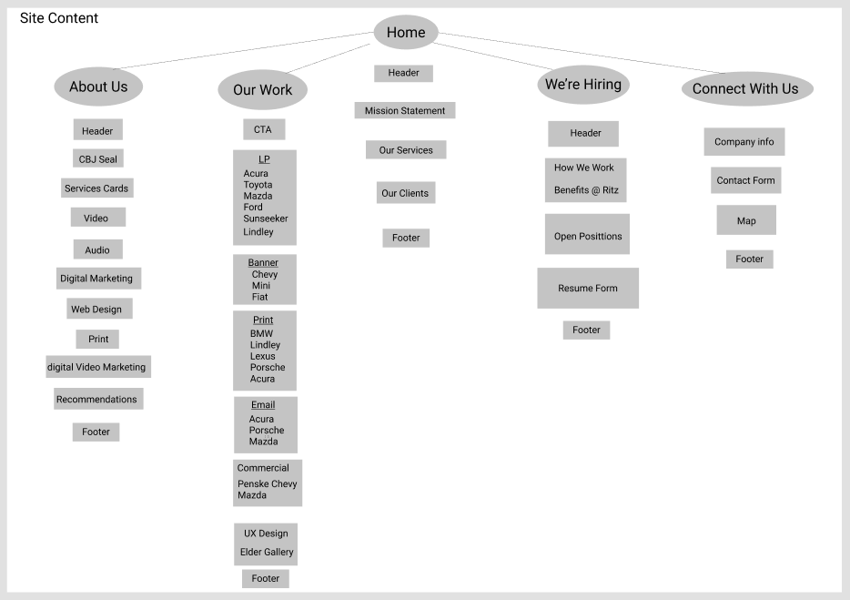
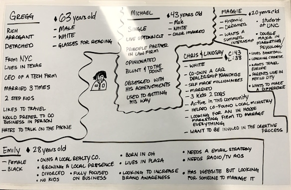
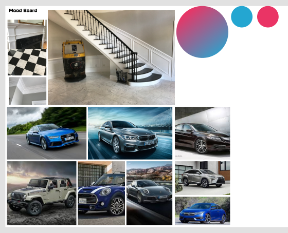
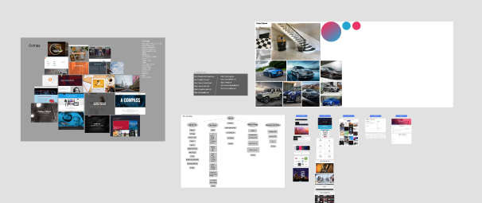

Our Challenge
Step one was to define overall objectives. Every project has to have a starting point so I met with the creative team to discuss how the past attempts at the project had gone. Not to my surprise they were not collaborative efforts. I explained how I wanted to go about tackling this problem and giving an overview of how I would like the process to go. We had three objectives to focus on.
- 1. Rethink what Ritz is and define business goals
- 2. Effectively present information designed for our users
- 3. Seperate ourselves from the competition
Defining Our Process
I wanted a road map for journey that we were embarking on. It didn’t need to be set in stone just something that I could reference and use to guide our focus. This is a rough outline of what I wanted to include at the very least:
Stakeholder interview, content audit, site map, competitor analysis, survey of employees, personas, storyboards, scenarios, moodboard, workflow diagram, wireframe, prototype, and user testing of the wireframe and prototype.

Research
I needed to do a site evaluation of our current site and see just where we were at. I didn’t want to assume that we were scraping everything and starting fresh. I started with a sitemap to get an idea of where everything was at and where the links were.

Next I did a content audit of everything on the site. I recorded all the images with screenshots and stored them in figma for reference and created a google doc with all of the copy. For a small site there was an amazing amount of copy. The site is image heavy and performance suffers because of it.
Competition
I wanted a clearer picture of who our competition was not only locally but in the country as a whole. My first step was Charlotte Business journal to find the top marketing agencies. I also consulted our VP of Accounts to find out who the other agencies are in the country that we compete with for automotive marketing which is where most of our work is centered. I found that we didn’t have much in the way of big competition, most were firms around the same size as ours for auto centric marketing. We do however have plenty of great competition locally. I brought the list that I had created to the creative team and asked them to look at all of them and pick their favorites. Wray Ward, Tattoo, and LGA came out on top. All three of these sites are visually stunning and engaging. Wray Ward in particular stands out from the crowd for its art directed content. We all agreed that it seems like they know who they are and who they are trying to attract.

Stakeholders
I think you have to enter a stakeholder meeting with a completely open mind. Sitting in front of me are people who don’t think like I do and while the brand image is important and marketing yourself is essential, there is no immediate paycheck attached to this job. I like to keep it simple and ask open ended questions. What is Ritz Marketing? What do we do well? What is the most important part of the website for you? I let them know that this is essentially our best marketing tool and the first impression the business will make on customers. What do you want Ritz Marketing to be? This is where I like to keep the focus. We do things well and we need to work on other things but we need to convey a sense of expertise and value to our users. I gained valuable insight from this meeting. I found out about business goals for the future that won’t be added to the site but can give creative the insight to see where we are headed and try to capture a sense of forward movement in the company.
I also surveyed the employees to find that most don’t use the site as a tool for promoting the business. Some haven’t been to the site in over a year. It is a source of embarrassment for some employees and they fully support the idea to redo this part of the business.
Users
The whole point of going through this ordeal is to focus on our users. I sat down with the creative team and our creative director and hashed out some of our typical user loosely based on some of the clients that we service. We also made up some fictional potential clients and we also created a user based off of our interns that we hire on a semesterly basis.
We came up with 5 total with ages ranging from 20 to 63 years old. These are first drafts and we will revisit them when we do some storyboard exercises later.
A place for ideas
I’m working with 3 graphic artist and a video/animations specialist on our creative team. I wanted to have a moodboard that they could upload to digitally. I decided to make one on Figma so that we all could collaborate. In our weekly standup agile meetings I suggested that they find some of the best work that we had done over the years. We have had things that we recognized for awards and others that were very successful for our customers. I also wanted them to create art based all of the research and data that we currently have so far in our process. I wanted them to keep it loose and not worry so much about does this fit on a web page. This is a huge advantage for us because these guys are talented and I wanted to leverage every advantage that we have so that we can set ourselves apart.
